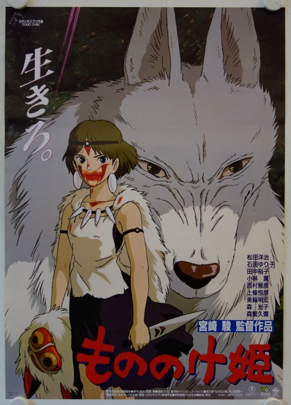

The rare and elusive Maria emerges from her lair only when it comes time to feed and has never been sighted in the same place twice (except that she attends Le Wagon almost everyday -__-). Ever moving, this noble creature is only frequented by those lucky enough to prove themselves worthy of her presence to know where to find her next. She evades those she wishes not know of her whereabouts, and would rather avoid confrontation than create it.
Though many have attempted to catch this elusive being, no single trainer has been able to claim ownership. She remains wild and to some, still a figment of the imagination. This legendary creature is quiet yet powerful. If not careful, you might not even know she is there until it's too late.
Maria is fond of delicious home-cooked pies, small meaningful trinkets, and good movies.
|  |
Princess Mononoke (1998)While protecting his village from rampaging boar-god/demon, a confident young warrior, Ashitaka, is stricken by a deadly curse. To save his life, he must journey to the forests of the west. Once there, he's embroiled in a fierce campaign that humans were waging on the forest. The ambitious Lady Eboshi and her loyal clan use their guns against the gods of the forest and a brave young woman, Princess Mononoke, who was raised by a wolf-god. Ashitaka sees the good in both sides and tries to stem the flood of blood. This is met by animosity by both sides as they each see him as supporting the enemy. |
Let the Right One In (2008)Oskar, a bullied 12-year old, dreams of revenge. He falls in love with Eli, a peculiar girl. She can't stand the sun or food and to come into a room she needs to be invited. Eli gives Oskar the strength to hit back but when he realizes that Eli needs to drink other people's blood to live he's faced with a choice. How much can love forgive? Set in the Stockholm suburb of Blackeberg in 1982. |
|
Perfect Blue (1998)Mima leaves the idol group CHAM, in order to pursue her dream as an actress. Mima climbs up the rocky road to success by performing as rape victims and posing nude for magazines, but is haunted by her reflections of the past. |
This very ordinary page was coded as part of a daily assignment at Le Wagon | Coding Bootcamp in Brussels.